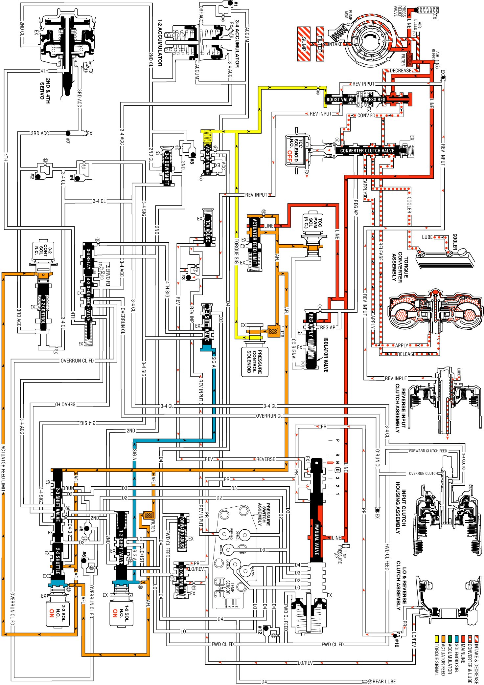

Neutral - Engine Running
Neutral - Engine Running
When the gear selector lever is moved to the Neutral position (N) from the Reverse position, the following changes occur to the transmission hydraulic and electrical systems.
Manual Valve
In the Neutral position, the manual valve blocks the line pressure from entering any other fluid circuits. Reverse and PR fluids exhaust past the manual valve.
Lo and Reverse Clutch Releases
Lo and Reverse Clutch Piston
PR and Lo/reverse fluids exhaust from the piston, thereby releasing the lo and reverse clutch plates. Exhausting PR fluid unseats the lo and reverse clutch checkball (#10) for a quick exhaust.
Lo Overrun Valve
Spring force closes the valve when the PR fluid pressure exhausts. Lo/reverse fluid exhausts through the valve, into the Lo/1st fluid circuit, past the 1-2 shift valve, into the Lo fluid circuit and through an exhaust port at the manual valve.
Reverse Input Cutch Releases
Reverse Input Clutch Piston
Reverse input fluid pressure exhausts from the piston, through the boost valve, past the #3 checkball and to the manual valve. With the reverse input fluid exhausted, the reverse input clutch plates are released and the transmission is in Neutral.
Reverse Abuse Valve
Reverse fluid pressure exhausts and spring force closes the valve.
Boost Valve
Reverse input fluid pressure exhausts and line pressure returns to the normal operating range as in the Park and Overdrive positions.
Reverse Input Checkball (#3)
Exhausting reverse input fluid unseats the ball for a quick exhaust through the reverse fluid circuit and past the manual valve.
Transmission Fluid Pressure (TFP) Manual Valve Position Switch Assembly
Important: In Park, Reverse and Neutral the shift solenoid valves are shown energized. This is the normal operating state when the vehicle is stationary or at low vehicle speeds. However, the PCM will change the shift solenoid valve states depending on the vehicle speed. For example, if Neutral is selected when the transmission is operating in Second Gear, the shift solenoid valves will remain in a Second Gear state. However, with the manual valve blocking line pressure, the shift solenoid valve states do not affect transmission operation in Park, Reverse and Neutral.
Reverse input fluid exhausts from the TFP manual valve position switch. With no other fluid routed to it, the TFP manual valve position switch signals the PCM that the transmission is operating in either Park or Neutral.
Neutral - Engine Running
Neutral - Engine Running:
